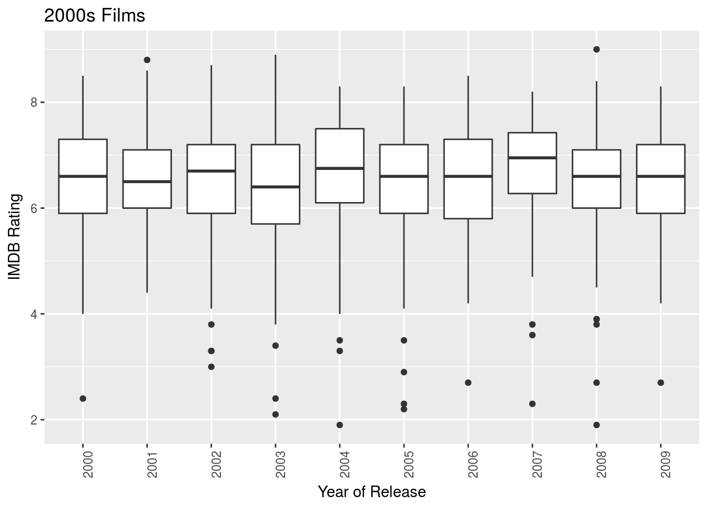
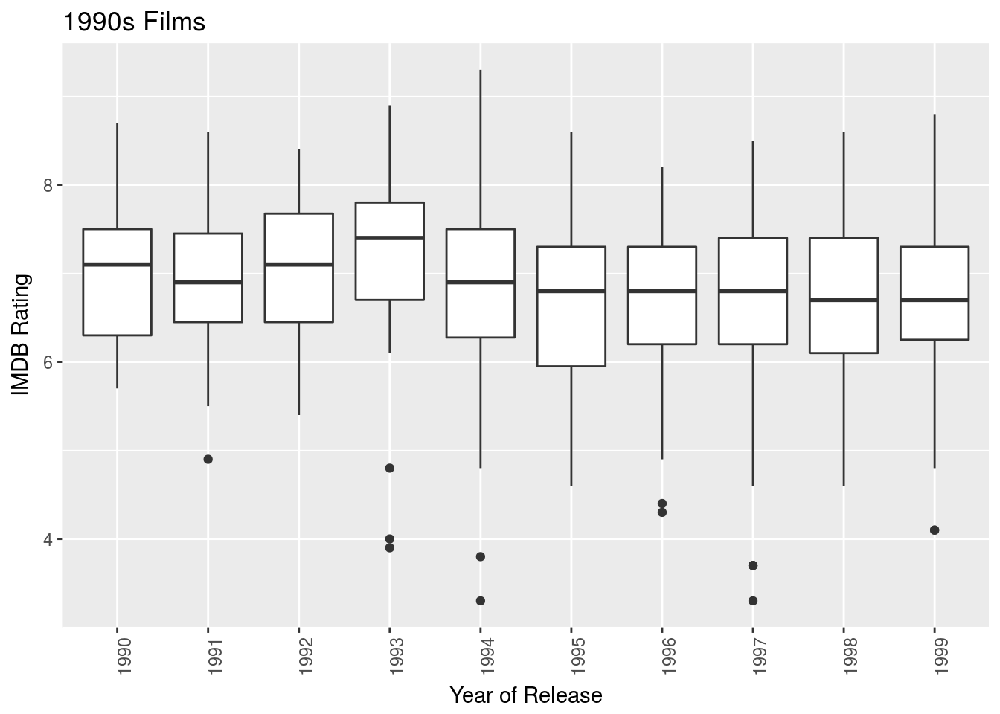
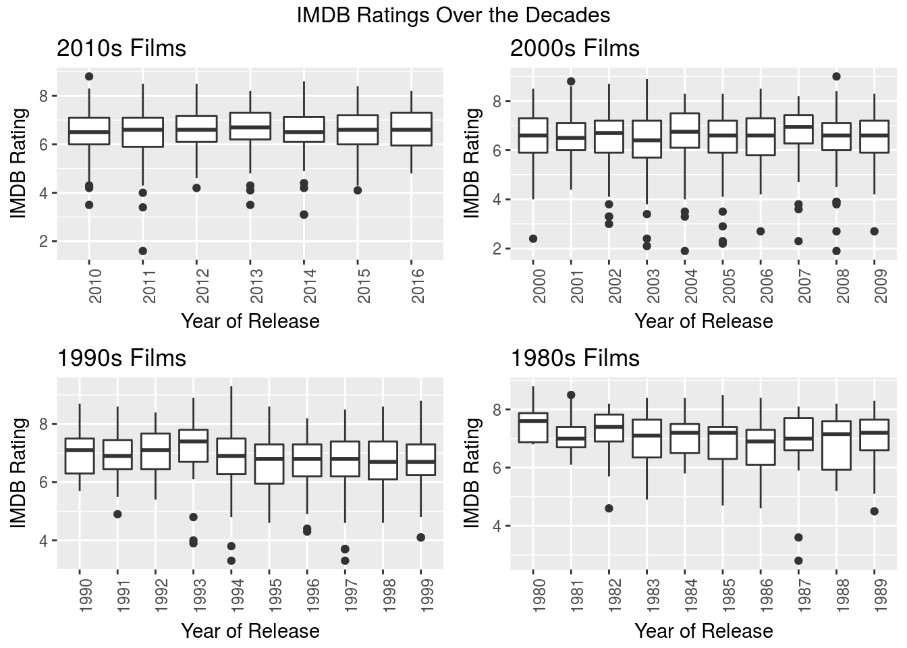

Portfolio
Here you’ll find projects that I have worked on/am working on. Naturally, I think all of my work should be questioned and improved on so I also include the code that produces it.
1 Classifying wine quality
This was done as my final project in PSTAT 131, a class on data mining at UCSB. The ultimate goal was to compare different machine learning techniques, both supervised and unsupervised (decision trees, k-Nearest Neighbors, and randomForest) to see what was the most accurate and robust among them. The following packages were utilized in this analysis: class, ROCR, randomForest, tree, plyr, and dplyr.
The dataset was taken from the UC Irvine Machine Learning Repository.
white <- read.csv("~/Documents/git-workspace/wine-classification/winequality-white.csv",
sep = ";")
set.seed(10)
# Reading in the data the data is loaded as 'white'
sapply(white, function(x) sum(is.na(x)))## fixed.acidity volatile.acidity citric.acid
## 0 0 0
## residual.sugar chlorides free.sulfur.dioxide
## 0 0 0
## total.sulfur.dioxide density pH
## 0 0 0
## sulphates alcohol quality
## 0 0 0A preliminary look at the dataset reveals that there are no missing values.
First we can look at the correlation matrix of the dataset, to see if any predictors are highly correlated with one another. We may have to take out these predictors in order to avoid multicollinearity, which can invalidate results. Having said this, multicollinearity is less of an issue with decision trees, and even less so with randomForest, both of which are going to be used in this analysis.
white.cor <- cor(white[, 1:12])Taking a look at the correlation coefficients \(r\) for the predictor variables, we see that density is strongly correlated with residual.sugar (\(r = 0.84\)) and alcohol (\(r = -0.78\)), and moderately correlated with total.sulfur.dioxide (\(r = 0.53\)). free.sulfur.dioxide and total.sulfur.dioxide are also moderately correlated with each other (\(r = 0.62\)) although this is trivially known because of course, free sulfur dioxide is incorporated into the total sulfur dioxide.
Aside from that correlations are all very low, including (and especially) quality, the response variable, with the predictors.
So, we should actually remove the variables residual.sugar and density, as well as total.sulfur.dioxide because if its direct relationship with free.sulfur.dioxide, in order to address problems with multicollinearity. We’re going to withhold removing alcohol, to see the if the initial effect of removing just these three correlated variables is enough to address the issue.
# removing three predictors
white2 <- subset(white, select = -c(4, 7, 8))From the new correlation matrix it appears that none of the predictors now have too high or a correlation with each other, and we can decide that multicollinearity is no longer an issue.
From here on out, we’re also going to want to convert the quality response variable into a binary factor so that we can use the predictors to classify the observations. We’re going to do this by labeling all of the observations that have received an above average (5 out of 10) as “good”, and the rest as “bad”, “bad” really meaning “not good”. This factor of good and bad goes under a new column titled label.
We’ll remove the quality variable afterwards, since if we use it as an attribute in the predictor, it will skew the results because it is directly correlated to the label.
It’s important to note that all of these numeric predictor variables (fixed.acidity, volatile.acidity, citric.acid, chlorides, free.sulfur.dioxide, pH, sulphates, alcohol) are not all scaled the same. As such, it’s appropriate to scale them before running any analyses.
# scaling the 8 numeric attributes
white_sc <- white2
white_sc[, c(1:8)] <- scale(white_sc[, c(1:8)])
# converting quality into a binary factor
for (i in 1:nrow(white_sc)) {
if (white_sc$quality[i] > 5)
white_sc$label[i] <- 1 else white_sc$label[i] <- 0
}
white_sc$label <- factor(white_sc$label, levels = c(0, 1), labels = c("bad", "good"))
# removing the quality variable
white_sc$quality <- NULLNow we have 8 numeric predictor variables, and one two-level categorical variable (label). We’re going to apply a few different classification methods in order to firstly determine which the best model for predicting is in terms of the relevant variables, and secondly to find the best classification algorithm for this data.
We’re going to initialize a matrix to easily compare the quality of the different classification methods we’re going to utilize going forward, namely decision trees (with k-fold cross validation to prune the tree), k-nearest neighbor, and randomForest. The ‘full randomForest’ refers to the model using all 8 predictors whereas the ‘small randomForest’ refers to a subset of these predictors, the use of which will become clear when discussing decision trees.
# initializing a matrix for records
records <- matrix(NA, nrow = 6, ncol = 3)
colnames(records) <- c("Accuracy Rate", "Error Rate", "AUC")
rownames(records) <- c("tree", "pruned.tree", "k=10 kNN", "k=35 kNN", "full.randomForest",
"small.randomForest")In order to apply machine learning algorithms to this dataset, we need to stratify the dataset into a training set and a test set. The first set will be used to teach the classification model how to predict, depending on the algorithm chosen. We then apply the algorithm to the test set, and see how accurate the classification was.
# set.seed(10) is loaded using a subset of 1000 obs for the training set
test_indices <- sample(1:nrow(white_sc), 1000)
test <- white_sc[test_indices, ]
train <- white_sc[-test_indices, ]1.1 Decision Tree
The first method we are going to perform on this dataset, is Decision Trees. Decision tree is a non-parametric classification method, which uses a set of rules to predict that each observation belongs to the most commonly occurring class label of training data.
Of course, we’re going to use label as a response variable, and each of the now 8 remaining numeric attributes as predictors.
# library(tree) is loaded predicting the label (good vs bad)
tree <- tree(formula = label ~ ., data = train, method = "class", control = tree.control(nobs = nrow(train),
mincut = 5, minsize = 10, mindev = 0.003))
summary(tree)##
## Classification tree:
## tree(formula = label ~ ., data = train, control = tree.control(nobs = nrow(train),
## mincut = 5, minsize = 10, mindev = 0.003), method = "class")
## Variables actually used in tree construction:
## [1] "alcohol" "volatile.acidity" "free.sulfur.dioxide"
## [4] "sulphates" "citric.acid" "fixed.acidity"
## Number of terminal nodes: 16
## Residual mean deviance: 0.9591 = 3723 / 3882
## Misclassification error rate: 0.2324 = 906 / 3898So we can see from this summary, that in fact 6 out of the 8 predictors were used in constructing this tree: alcohol, volatile.acidity, free.sulfur.dioxide, sulphates, citric.acid, and fixed.acidity. Now we are actually going to plot the tree to visualize this.
plot(tree, type = "uniform")
text(tree, pretty = 0, cex = 1, col = "red")
title("Classification Tree (Before Pruning)")
We can see while looking at the tree how often alcohol appears and intuit from that that the amount of alcohol, whether high or low, plays at least some part in the model’s classification of a good wine.
We can build a confusion matrix after using the data to predict on the test set, and then find the accuracy rate and the error rate.
# a function that returns the accuracy of a confusion matrix
class_acc <- function(conf) {
sum(diag(conf))/sum(conf)
}
tree_pred <- predict(tree, test, type = "class")
# confusion matrix
tree_conf <- table(pred = tree_pred, true = test$label)
tree_conf## true
## pred bad good
## bad 198 122
## good 130 550# the class_acc() function is defined locally
tree_acc <- class_acc(tree_conf)
tree_acc## [1] 0.748# misclassification error
tree_err <- 1 - tree_acc
tree_err## [1] 0.252With an accuracy rate of 0.748, this decision tree model is not superb, but will still classify correctly about 3 out of 4 times.
As an alternative metric to quantify the robustness of this method, we can use the Receiver Operating Characteristic (ROC) curve and the area underneath it (AUC). The ROC curve plots the false positive rate against the true positive rate, and the area underneath it falls between either 0.5 or 1, 0.5 being the worst (random classification), and 1 being the best (perfect classification).
# library(ROCR) is loaded getting matrix of predicted class probabilities
all_tree_probs <- as.data.frame(predict(tree, test, type = "vector"))
tree_probs <- all_tree_probs[, 2]
tree_roc_pred <- prediction(tree_probs, test$label)
tree_roc_perf <- performance(tree_roc_pred, "tpr", "fpr")
# Plotting the ROC curve for the decision tree
plot(tree_roc_perf, col = 2, lwd = 3, main = "ROC Curve for tree (before pruning)")
abline(0, 1)
# Area under the curve
tree_auc_perf <- performance(tree_roc_pred, "auc")
tree_AUC <- tree_auc_perf@y.values[[1]]
tree_AUC## [1] 0.787554# adding to records matrix
records[1, ] <- c(tree_acc, tree_err, tree_AUC)
records## Accuracy Rate Error Rate AUC
## tree 0.748 0.252 0.787554
## pruned.tree NA NA NA
## k=10 kNN NA NA NA
## k=35 kNN NA NA NA
## full.randomForest NA NA NA
## small.randomForest NA NA NAWe see thusly that the area under the curve is \(0.788\) which is slightly closer to 1 than 0.5. That is to say that it is more good than bad, but hardly so.
1.1.1 k-fold Cross Validation
We can use k-fold cross-validation, which randomly partitions the dataset into folds of similar size, to see if the tree requires any pruning which can improve the model’s accuracy as well as make it more interpretable for us.
In k-fold cross validation, we divide the sample into k sub samples, then train the model on k -1 samples, leaving one as a holdout sample. We compute validation error on each of these samples, then average the validation error of all of them.
The idea of cross-validation is that it will sample multiple times from the training set, with different separations. Ultimately, this creates a more robust model i.e. the tree will not be overfit.
Cross validation will help us find the optimal size for the tree (in terms of number of nodes). We can plot the size against misclassification error to visualize this as well.
set.seed(10)
# 10-fold CV (k = 10) library(tree) is loaded
cv <- cv.tree(tree, FUN = prune.misclass, K = 10)
cv## $size
## [1] 16 9 7 5 4 3 1
##
## $dev
## [1] 1013 1013 1012 1023 1025 1045 1252
##
## $k
## [1] -Inf 0.0 4.0 9.5 36.0 71.0 136.0
##
## $method
## [1] "misclass"
##
## attr(,"class")
## [1] "prune" "tree.sequence"# Best size
best.cv <- cv$size[which.min(cv$dev)]
# plotting misclass error as a function of tree size (k)
plot(cv$size, cv$dev, type = "b", xlab = "Number of leaves, 'best'", ylab = "Misclassification Error",
col = "red", main = "Optimal Tree Size")
abline(v = best.cv, lty = 2)
best.cv## [1] 7So we see, after running cross-validation, we see that we should prune the tree so that it has only 7 nodes. With this knowledge we can prune the tree and run the same diagnostics on it that we did on the unpruned model to see if any improvements are apparent.
tree.pruned <- prune.tree(tree, best = best.cv, method = "misclass")
summary(tree.pruned)##
## Classification tree:
## snip.tree(tree = tree, nodes = c(4L, 10L, 23L, 7L))
## Variables actually used in tree construction:
## [1] "alcohol" "volatile.acidity" "free.sulfur.dioxide"
## Number of terminal nodes: 7
## Residual mean deviance: 1.021 = 3971 / 3891
## Misclassification error rate: 0.2345 = 914 / 3898plot(tree.pruned, type = "uniform")
title("Pruned Classification Tree")
text(tree.pruned, col = "blue")
Note that after pruning the tree, the only relevant variables used in tree construction are: alcohol, volatile.acidity, and free.sulfur.dioxide. And of course, this tree only has 7 nodes, the best tree size we determined from using cross-validation.
Now we can apply the same diagnostic methods as before: looking at confusion matrix, accuracy/error rate, the ROC curve and the area underneath it, for the sake of comparison.
pruned_pred <- predict(tree.pruned, test, type = "class")
# confusion matrix
pruned_conf <- table(pred = pruned_pred, true = test$label)
pruned_conf## true
## pred bad good
## bad 196 119
## good 132 553pruned_acc <- class_acc(tree_conf)
pruned_acc## [1] 0.748pruned_err <- 1 - tree_acc
pruned_err## [1] 0.252We see that pruning the tree didn’t actually really improve the accuracy rate of the model at all, although it did condense the number of relevant variables. Initially, seeing that accuracy did not improve might give the impression that pruning was not meaningful, but to the contrary, the fact that we were able to prune the tree without losing any accuracy shows that the sole 3 variables we have remaining (alcohol, volatile.acidity, and free.sulfur.dioxide) are just as good as classifying when using a decision tree as when using all 8 predictors.
The original model being rather complex with as many as 6 predictors runs the risk of over-fitting, which is to say that the data follows the training data too closely and cannot be well generalized to new data. This is why we are inclined to favor a simpler model such as that we found after pruning with cross-validation.
# ROC Curve with tree object getting matrix of predicted class probabilities
all_pruned_probs <- as.data.frame(predict(tree.pruned, test, type = "vector"))
pruned_probs <- all_pruned_probs[, 2]
pruned_roc_pred <- prediction(pruned_probs, test$label)
pruned_roc_perf <- performance(pruned_roc_pred, "tpr", "fpr")
# Plotting the ROC curve for the rpart decision tree
plot(pruned_roc_perf, col = 2, lwd = 3, main = "ROC Curve for Pruned tree")
abline(0, 1)
pruned_auc_perf <- performance(pruned_roc_pred, "auc")
pruned_AUC <- pruned_auc_perf@y.values[[1]]
pruned_AUC## [1] 0.7557391records[2, ] <- c(pruned_acc, pruned_err, pruned_AUC)
records## Accuracy Rate Error Rate AUC
## tree 0.748 0.252 0.7875540
## pruned.tree 0.748 0.252 0.7557391
## k=10 kNN NA NA NA
## k=35 kNN NA NA NA
## full.randomForest NA NA NA
## small.randomForest NA NA NASo while the accuracy and error rates are virtually unchanged, the area under the curve (AUC) has slightly decreased. It’s not a substantial decrease, but one could argue that it has overall made the model worse. Conversely it could be argued that the strength of the model is relatively preserved while reducing the number of variables included. This is good because it gives us a better idea of what the important variables are when it comes to classifying the wines.
Now we have added both the original and the pruned tree’s respective error rates and AUC’s to the records matrix, and we can proceed to the next method of classification.
1.2 k-Nearest Neighbors (kNN)
We’re now going to apply the k-nearest neighbors method of classification, which is a non-parametric method. k-Nearest neighbors (or kNN) is called a “lazy learning” technique because it goes through the training set every time it predicts a test sample’s label. It finds this label by plotting the test sample in the same dimensional space as the training data, then classifies it based on the “k nearest neighbor(s)”, i.e. if k = 10, then the label of the 10 nearest neighbors in the training data to the test data observation will be applied to that observation.
Distance is measured in different ways, but by default the knn() function utilized Euclidean distance.
This is rather problematic because when calculating distance it’s assumed that attributes have the same effect, while this is not generally true. So the distance metric (Euclidean distance in this case) does not take into account the attributes’ relationships with each other, which can result in misclassification. So already we have determined a shortcoming in the kNN method before we have even applied it. Although of course, we already dropped the predictors that were highly correlated with each other, and what’s more we scaled the remaining numeric predictors, which goes in a small way to addressing this.
set.seed(10)
# library(class) is loaded using 20 nearest neighbors
knn_pred <- knn(train = train[, -9], test = test[, -9], cl = train$label, k = 10,
prob = TRUE)
# confusion matrix
knn_conf <- table(pred = knn_pred, true = test$label)
knn_conf## true
## pred bad good
## bad 192 99
## good 136 573# accuracy
knn_acc <- class_acc(knn_conf)
knn_acc## [1] 0.765# misclassification error
knn_err <- 1 - knn_acc
knn_err## [1] 0.235So, using 10 nearest neighbors was just a random estimate, and it ended up with another mediocre accuracy rate (\(0.765\)) but we can look at the area under the ROC curve (AUC) and look at the strength of the test relative to the methods we have tried so far.
# Creating the ROC curve for knn library(dplyr) is loaded
knn_prob <- attr(knn_pred, "prob")
knn_prob <- 2 * ifelse(knn_pred == "-1", 1 - knn_prob, knn_prob) - 1
knn_roc_pred <- prediction(predictions = knn_prob, labels = test$label)
knn_roc_perf <- performance(knn_roc_pred, measure = "tpr", x.measure = "fpr")
# Plotting the KNN ROC curve
plot(knn_roc_perf, col = 2, lwd = 3, main = "ROC Curve for kNN, k = 10")
abline(0, 1)
# Area under the knn curve
knn_auc_perf <- performance(knn_roc_pred, measure = "auc")
knn_AUC <- knn_auc_perf@y.values[[1]]
knn_AUC## [1] 0.6791635records[3, ] <- c(knn_acc, knn_err, knn_AUC)
records## Accuracy Rate Error Rate AUC
## tree 0.748 0.252 0.7875540
## pruned.tree 0.748 0.252 0.7557391
## k=10 kNN 0.765 0.235 0.6791635
## k=35 kNN NA NA NA
## full.randomForest NA NA NA
## small.randomForest NA NA NASo with an AUC of \(0.679\), this test is not very good. We can look at different values for \(k\) and try to find the best one to use and then compare the results from that with these.
set.seed(10)
# library 'class' is loaded
range <- 1:50
knn_accs <- rep(0, length(range))
# Determining the best k for k-nearest neighbors classification
for (k in range) {
knn_pred <- knn(train = train[, -9], test = test[, -9], cl = train$label, k = k,
prob = TRUE)
knn_conf <- table(pred = knn_pred, true = test$label)
knn_accs[k] <- class_acc(knn_conf)
}
# plotting k vs accuracy
plot(range, knn_accs, xlab = "k", ylab = "accuracy", main = "Number of Neighbors (k) vs Test Accuracy") This is interesting because accuracy seems to follow a slight negative trend but overall there are huge jumps in accuracy when incrementing only by 1. We know well that using \(k=1\) will result in a very low bias and high variance, and this also means that we are fitting too closely to the training dataset and therefore, overfitting. This makes for a bad model that cannot be well generalized to new data.
This is interesting because accuracy seems to follow a slight negative trend but overall there are huge jumps in accuracy when incrementing only by 1. We know well that using \(k=1\) will result in a very low bias and high variance, and this also means that we are fitting too closely to the training dataset and therefore, overfitting. This makes for a bad model that cannot be well generalized to new data.
Here is the ROC curve demonstrating this.
worst_knn_pred <- knn(train = train[, -9], test = test[, -9], cl = train$label, k = 1,
prob = TRUE)
worst_knn_prob <- attr(worst_knn_pred, "prob")
worst_knn_prob <- 2 * ifelse(worst_knn_pred == "-1", 1 - worst_knn_prob, worst_knn_prob) -
1
worst_knn_roc_pred <- prediction(predictions = worst_knn_prob, labels = test$label)
worst_knn_roc_perf <- performance(worst_knn_roc_pred, measure = "tpr", x.measure = "fpr")
# Plotting the KNN ROC curve
plot(worst_knn_roc_perf, col = 2, lwd = 3, main = "ROC Curve for kNN, k = 1")
abline(0, 1)
So we think better not to opt for \(k=1\) and rather choose some \(k\) like 35, which is still decently accurate, and probably less biased.
# library(knn) is loaded
new_knn_pred <- knn(train = train[, -9], test = test[, -9], cl = train$label, k = 35,
prob = TRUE)
# confusion matrix
new_knn_conf <- table(true = test$label, pred = new_knn_pred)
new_knn_conf## pred
## true bad good
## bad 179 149
## good 96 576# accuracy rate
new_knn_acc <- class_acc(new_knn_conf)
new_knn_acc## [1] 0.755# misclassification error rate
new_knn_err <- 1 - new_knn_acc
new_knn_err## [1] 0.245Using \(k=35\) gives a slight increase in test accuracy relative to \(k=10\), although it is not very significant. Now let’s look at the ROC curve and the AUC to make our final comparison, both with the \(k=10\) model, and the decision trees.
# Creating the ROC curve for knn library(dplyr) is loaded
new_knn_prob <- attr(new_knn_pred, "prob")
new_knn_prob <- 2 * ifelse(new_knn_pred == "-1", 1 - new_knn_prob, new_knn_prob) -
1
new_knn_roc_pred <- prediction(predictions = new_knn_prob, labels = test$label)
new_knn_roc_perf <- performance(new_knn_roc_pred, measure = "tpr", x.measure = "fpr")
# Plotting the KNN ROC curve
plot(new_knn_roc_perf, col = 2, lwd = 3, main = "ROC Curve for kNN, k = 35")
abline(0, 1)
# Area under the knn curve
new_knn_auc_perf <- performance(new_knn_roc_pred, measure = "auc")
new_knn_AUC <- new_knn_auc_perf@y.values[[1]]
new_knn_AUC## [1] 0.7106358records[4, ] <- c(new_knn_acc, new_knn_err, new_knn_AUC)
records## Accuracy Rate Error Rate AUC
## tree 0.748 0.252 0.7875540
## pruned.tree 0.748 0.252 0.7557391
## k=10 kNN 0.765 0.235 0.6791635
## k=35 kNN 0.755 0.245 0.7106358
## full.randomForest NA NA NA
## small.randomForest NA NA NASo we see that although we have sacrified some accuracy, the area under the curve has increased somewhat, so it could be argued that the test has improved. What’s more, with a dataset of this dimensionality, it is most likely better to use more neighbors if one can, because otherwise you run the risk of overfitting to the training data (which is why we did not opt for \(k=1\).)
So we see actually that while kNN is slightly more accurate than decision trees, the area under the ROC curve is worsened which makes it a worse test. Also, kNN is computationally rather expensive and it gets to be very complex when dealing with datasets with high dimensions (this dataset has nearly 5000 rows), so we think to rule out k-nearest neighbors when deciding what the best method of classification is.
Finally we can move on to the final method of classification, randomForest.
1.3 randomForest
randomForest is similar to the decision tree method in that it builds trees, hence the name ‘random Forest’. This is an ensemble learning method which creates a multitude of decision trees, and outputting the class that occurs most frequently among them. The advantage that randomForest has over decision trees is the element of randomness which guards against the pitfall of overfitting that decision trees run into on their own.
### Random Forest using all 8 predictor attributes, on the training set
rf <- randomForest(formula = label ~ ., data = train, mtry = 8)
print(rf)##
## Call:
## randomForest(formula = label ~ ., data = train, mtry = 8)
## Type of random forest: classification
## Number of trees: 500
## No. of variables tried at each split: 8
##
## OOB estimate of error rate: 16.34%
## Confusion matrix:
## bad good class.error
## bad 939 373 0.2842988
## good 264 2322 0.1020882varImpPlot(rf, main = "Variable Importance Plot")
meanDecreaseGini refers to the “mean decrease in node impurity”. Impurity is a way that the optimal condition of a tree is determined, and this plot shows how each variable individually affects the weighted impurity of the tree itself.
randomForest used all 8 of the predictor variables. This variable importance plot shows how ‘important’ each variable was in determining the classification. We can see that, consistent with the pruned decision tree, that alcohol, volatile.acidity, and free.sulfur.dioxide are the three most important predictors.
# predicting on the test set
rf_pred <- predict(rf, test, type = "class")
# Confusion Matrix
rf_conf <- table(true = test$label, pred = rf_pred)
rf_conf## pred
## true bad good
## bad 235 93
## good 81 591rf_acc <- class_acc(rf_conf)
rf_acc## [1] 0.826rf_err <- 1 - rf_acc
rf_err## [1] 0.174With an accuracy rate of 0.823, this randomForest model is looking pretty good so far, and it already is more accurate than any method we’ve tried thus far.
Let’s take a look at the ROC curve and the area underneath it.
# Building the ROC Curve
rf_pred <- as.data.frame(predict(rf, newdata = test, type = "prob"))
rf_pred_probs <- rf_pred[, 2]
rf_roc_pred <- prediction(rf_pred_probs, test$label)
rf_perf <- performance(rf_roc_pred, measure = "tpr", x.measure = "fpr")
# Plotting the curve
plot(rf_perf, col = 2, lwd = 3, main = "ROC Curve for randomForest with 8 variables")
abline(0, 1)
# Area under the curve
rf_perf2 <- performance(rf_roc_pred, measure = "auc")
rf_AUC <- rf_perf2@y.values[[1]]
rf_AUC## [1] 0.8869796records[5, ] <- c(rf_acc, rf_err, rf_AUC)
records## Accuracy Rate Error Rate AUC
## tree 0.748 0.252 0.7875540
## pruned.tree 0.748 0.252 0.7557391
## k=10 kNN 0.765 0.235 0.6791635
## k=35 kNN 0.755 0.245 0.7106358
## full.randomForest 0.826 0.174 0.8869796
## small.randomForest NA NA NAThe area under the ROC curve for randomForest is 0.887, which is also a strong AUC for a classification model.
So we see actually that randomForest stands head and shoulders above the other two methods, decision tree and k-nearest neighbors. This is seen in the fact that the accuracy rate, as well as the AUC, are the highest. Judging from this, we can assume that randomForest would be the most likely to correctly classify a wine based off of the attributes and data given.
Recall that earlier we determined in the decision tree that the relevant variables were: alcohol, volatile.acidity, and free.sulfur.dioxide. While this randomForest model was pretty effective in utilizing all of the 8 predictors, we can take a look at a model using only these 3 as well for the sake of comparison.
We have established by now that simpler models have a reduced bias and complexity, but higher variance and a higher chance of underfitting, whereas complex models (such as the full model) have the opposite issue. The good thing about randomForest is that it inherently accounts for this “Bias-Variance” tradeoff by introducing randomness with bagging (bootstrap aggregating).
The question here is whether or not making the model simpler is worthwhile, but we can build the simple model and compare their metrics to find out.
rf2 <- randomForest(formula = label ~ alcohol + volatile.acidity + free.sulfur.dioxide,
data = train, mtry = 3)
# predicting on the test set
rf_pred2 <- predict(rf2, test, type = "class")
# Confusion Matrix
rf_conf2 <- table(test$label, rf_pred2)
rf_conf2## rf_pred2
## bad good
## bad 217 111
## good 83 589rf_acc2 <- class_acc(rf_conf2)
rf_acc2## [1] 0.806rf_err2 <- 1 - rf_acc2
rf_err2## [1] 0.194# Building the ROC Curve
rf_pred2 <- as.data.frame(predict(rf2, test, type = "prob"))
rf_pred_probs2 <- rf_pred2[, 2]
rf_roc_pred2 <- prediction(rf_pred_probs2, test$label)
rf_perf2 <- performance(rf_roc_pred2, measure = "tpr", x.measure = "fpr")
# Plotting the curve
plot(rf_perf2, col = 2, lwd = 3, main = "ROC Curve for randomForest with 3 variables")
abline(0, 1)
# Area under the curve
rf_perf22 <- performance(rf_roc_pred2, measure = "auc")
rf_AUC2 <- rf_perf22@y.values[[1]]
rf_AUC2## [1] 0.8455443records[6, ] <- c(rf_acc2, rf_err2, rf_AUC2)
records## Accuracy Rate Error Rate AUC
## tree 0.748 0.252 0.7875540
## pruned.tree 0.748 0.252 0.7557391
## k=10 kNN 0.765 0.235 0.6791635
## k=35 kNN 0.755 0.245 0.7106358
## full.randomForest 0.826 0.174 0.8869796
## small.randomForest 0.806 0.194 0.8455443The accuracy rate has actually decreased, as well as the area under the curve, but not significantly. We’re managed to actually preserve the strength of the model, both in relation to the tree and knn methods, but also relative to the original application of randomForest with all of the predictors.
As such, we can opt to utilize this much smaller model for classification instead if we are concerned about complexity and bias. Having said that, because of the randomization introduced in the randomForest, it is inherently more robust so subsetting in this manner may even be unnecessary.
1.4 Conclusion
So judging from all of our findings, we have seen that in this case, randomForest is the best algorithm (out of the three we’ve compared) for classifying this wine dataset. So we have answered the question of what among these three classification algorithms is truly the best.
The decision tree algorithm is useful but ultimately, randomForest is superior version of it since it aggregates many decision trees to create an optimized model that is not susceptible to overfitting. When it comes to interpretability however, a decision tree is preferred. When using a decision tree however it is important to use cross-validation to prune the tree in order to narrow it down to the most important variables.
Compared to decision trees, the k-nearest neighbor algorithm has a slightly greater accuracy rate but a worse AUC. The decision tree method did however help to narrow down the three most relevant attributes: alcohol, volatile.acidity, and free.sulfur.dioxide. This finding was consistent with when we took a look at the most important variables in the randomForest model.
We were able to apply this subset of attributes to the randomForest algorithm and come out with a strong model that only utilizes a few independent variables in order to classify at a high success rate. This lends strength to the argument that these three variables are the most relevant when it comes to determining the content of a good wine.
As far as what these variables’ importance is in reality, is that sulfur dioxide is crucial for killing bacteria in wine when creating it. On the other hand, volatile acidity is an undesired trait in wine that affects flavor, that can be caused by such bacteria. So it makes sense that wine that is high in sulfur dioxide, and low in volatile acidity, is considered good.
The pending questions that remain are, did we overfit or underfit to the training data when testing these different classification methods? It is also worth determining exactly the threshold for the amounts of these variables such as alcohol, for example finding the optimal amount of alcohol content to create a good wine.
We would also like to delve more into how best to select some \(k\) for kNN that maintains a high level of accuracy while also having a balance between bias and variance without either over or underfitting. We would also posit a similar question for the number of nodes in a decision tree. Finally, is dropping variables in randomForest really necessary, if the randomization inherent in it already accounts for overfitting?
If we can only compare models that utilize the same set of predictors, then we should look at the pruned classification tree against the randomForest model utilizing the same attributes. We see even there that the randomForest model is superior.
In conclusion we have found that randomForest is best for binary classification and that alcohol, volatile acidity, and free sulfur dioxide are the most important predictors when attempting to classify a good wine.
2 Visualizing IMDB ratings
This was a very simple visualization I did to test out some of the abilities of ggplot2, an R package with some more robust options that go beyond the base level visualization abilities of R.
We seek to visualize movies over the past few decades to see how quality (or perceived quality at least) has changed over time. There is no actual analysis done on this data, save for the kind of intuitive deduction that can be made from observing the visualizations. Having said that, I would be interested in delving more deeply into these data with the skills in data mining that I’ve gained since having done this.
Data was found on Kaggle.com and drawn from the Internet Movie Database.
2.1 Subsetting the data
# ggplot2, gridExtra, readr are loaded The dataset is loaded as 'movies'
movies <- read.csv("~/Documents/git-workspace/imdb-ratings/movie_metadata.csv", stringsAsFactors = FALSE,
na.strings = c(NA, "NA"), skipNul = TRUE, fill = FALSE)
# This subsets the movies to only those which have been voted on by more than
# 20000 users
movies <- subset(movies, num_voted_users >= 20000)
# To remove any rows with missing values
movies <- movies[complete.cases(movies), ]
# Reducing the data.frame to relevant variables
keeps <- c("imdb_score", "title_year", "movie_title", "director_name")
movies <- movies[keeps]2.2 The 10s
The data for the decade that began in 2010 only goes up until 2016, so naturally it is a smaller subset of data than the rest.
Let’s take a look at the best and worst films of the decade.
tens <- subset(movies, title_year >= 2010)
tens <- tens[order(tens$imdb_score, decreasing = TRUE), ]
head(tens)## imdb_score title_year movie_title director_name
## 98 8.8 2010 Inception Christopher Nolan
## 97 8.6 2014 Interstellar Christopher Nolan
## 4 8.5 2012 The Dark Knight Rises Christopher Nolan
## 297 8.5 2012 Django Unchained Quentin Tarantino
## 3932 8.5 2011 Samsara Ron Fricke
## 4029 8.5 2014 Whiplash Damien ChazelleNote the fact that the three best films of this 6-year period (as voted by IMDB users) were all by Christopher Nolan. Also tied for third is my favorite director, Quentin Tarantino with Django Unchained.
tail(tens)## imdb_score title_year movie_title director_name
## 2204 3.5 2010 Vampires Suck Jason Friedberg
## 2211 3.5 2013 Scary Movie 5 Malcolm D. Lee
## 515 3.4 2011 Jack and Jill Dennis Dugan
## 2400 3.1 2014 Left Behind Vic Armstrong
## 2569 3.1 2014 Left Behind Vic Armstrong
## 2835 1.6 2011 Justin Bieber: Never Say Never Jon M. ChuOn the other side of things, the worst film of this period was apparently Justin Bieber’s concert film, Never Say Never. Two parody films topped the list.
tens_plot <- ggplot(tens, aes(x = factor(title_year), y = imdb_score)) + geom_boxplot()
tens_plot <- tens_plot + theme(legend.position = "none") + theme(axis.text.x = element_text(angle = 90,
hjust = 1)) + scale_y_continuous(breaks = seq(0, 10, 2))
tens_plot <- tens_plot + labs(title = "2010s Films", x = "Year of Release", y = "IMDB Rating")
tens_plot
Modern films seem to be pretty mediocre across the board (between 6-7), but if nothing else, each year seems to be consistent with the last. The sole high outlier of this decade was the 2010 film Inception, directed by Christopher Nolan.
2.3 The 00s
zeroes <- subset(movies, title_year >= 2000 & title_year < 2010)
zeroes <- zeroes[order(zeroes$imdb_score, decreasing = TRUE), ]
head(zeroes)## imdb_score title_year movie_title
## 67 9.0 2008 The Dark Knight
## 340 8.9 2003 The Lord of the Rings: The Return of the King
## 271 8.8 2001 The Lord of the Rings: The Fellowship of the Ring
## 341 8.7 2002 The Lord of the Rings: The Two Towers
## 4030 8.7 2002 City of God
## 2374 8.6 2001 Spirited Away
## director_name
## 67 Christopher Nolan
## 340 Peter Jackson
## 271 Peter Jackson
## 341 Peter Jackson
## 4030 Fernando Meirelles
## 2374 Hayao MiyazakiAll three of Peter Jackson’s The Lord of the Rings trilogy cracked the top 6, along with another Nolan Batman film. Two foreign films made the top of this list, the Brazilian film City of God (aka Cidade de Deus) and a personal favorite, along with the animated Miyazaki classic, Spirited Away.
tail(zeroes)## imdb_score title_year movie_title director_name
## 2193 2.3 2007 Epic Movie Jason Friedberg
## 2314 2.3 2005 Alone in the Dark Uwe Boll
## 320 2.2 2005 Son of the Mask Lawrence Guterman
## 2984 2.1 2003 From Justin to Kelly Robert Iscove
## 2269 1.9 2008 Disaster Movie Jason Friedberg
## 2296 1.9 2004 Superbabies: Baby Geniuses 2 Bob ClarkNotably, two of the worst films of this decade were by Jason Friedberg, namely the parody films Epic Movie and Disaster Movie. He is also responsible for Vampires Suck, one of the worst rated films of the 2010s.
zeroes_plot <- ggplot(zeroes, aes(x = factor(title_year), y = imdb_score)) + geom_boxplot()
zeroes_plot <- zeroes_plot + theme(legend.position = "none") + theme(axis.text.x = element_text(angle = 90,
hjust = 1)) + scale_y_continuous(breaks = seq(0, 10, 2))
zeroes_plot <- zeroes_plot + labs(title = "2000s Films", x = "Year of Release", y = "IMDB Rating")
zeroes_plot
2.4 The 90s
nineties <- subset(movies, title_year >= 1990 & title_year < 2000)
nineties <- nineties[order(nineties$imdb_score, decreasing = TRUE), ]
head(nineties)## imdb_score title_year movie_title director_name
## 1938 9.3 1994 The Shawshank Redemption Frank Darabont
## 1875 8.9 1993 Schindler's List Steven Spielberg
## 3356 8.9 1994 Pulp Fiction Quentin Tarantino
## 684 8.8 1999 Fight Club David Fincher
## 837 8.8 1994 Forrest Gump Robert Zemeckis
## 655 8.7 1999 The Matrix Lana WachowskiThree of my favorite films came out in the 1990s and topped this list: Pulp Fiction, Fight Club, and The Matrix. The decade’s top film, The Shawshank Redemption, actually was a box office disappointment because of its direct competition with Tarantino’s film.
tail(nineties)## imdb_score title_year movie_title
## 1448 3.8 1994 Street Fighter
## 218 3.7 1997 Batman & Robin
## 268 3.7 1997 Speed 2: Cruise Control
## 1661 3.7 1997 Mortal Kombat: Annihilation
## 1935 3.3 1997 Spice World
## 3231 3.3 1994 Police Academy: Mission to Moscow
## director_name
## 1448 Steven E. de Souza
## 218 Joel Schumacher
## 268 Jan de Bont
## 1661 John R. Leonetti
## 1935 Bob Spiers
## 3231 Alan MetterTwo films based on fighting video games (my personal favorite genre) landed in the bottom spots: Street Fighter, notably starring Jean Claude van Damme and Kylie Minogue, and Mortal Kombat: Annihilation. Also included was the only Batman film starring George Clooney, replacing Val Kilmer. It would be the last Batman film until Nolan’s reboot in 2005 (the third of his Batman trilogy of course topping the charts in the 2010s). Arnold Schwarzeneggar was Mr. Freeze in this film, possibly the ‘punniest’ villain of all time.
nineties_plot <- ggplot(nineties, aes(x = factor(title_year), y = imdb_score)) +
geom_boxplot()
nineties_plot <- nineties_plot + theme(legend.position = "none") + theme(axis.text.x = element_text(angle = 90,
hjust = 1)) + scale_y_continuous(breaks = seq(0, 10, 2))
nineties_plot <- nineties_plot + labs(title = "1990s Films", x = "Year of Release",
y = "IMDB Rating")
nineties_plot
2.5 The 80s
eighties <- subset(movies, title_year >= 1980 & title_year < 1990)
eighties <- eighties[order(eighties$imdb_score, decreasing = TRUE), ]
head(eighties)## imdb_score title_year movie_title
## 2052 8.8 1980 Star Wars: Episode V - The Empire Strikes Back
## 2153 8.5 1981 Raiders of the Lost Ark
## 2364 8.5 1985 Back to the Future
## 1537 8.4 1983 Star Wars: Episode VI - Return of the Jedi
## 1715 8.4 1984 Once Upon a Time in America
## 2487 8.4 1986 Aliens
## director_name
## 2052 Irvin Kershner
## 2153 Steven Spielberg
## 2364 Robert Zemeckis
## 1537 Richard Marquand
## 1715 Sergio Leone
## 2487 James CameronRobert Zemeckis, who made the last list in the 90s for Forrest Gump, also topped this decade with one of my favorites, Back to the Future. The two latter films in the original Star Wars trilogy, Episodes V and VI, also topped the list.
tail(eighties)## imdb_score title_year movie_title
## 4230 4.7 1985 Friday the 13th: A New Beginning
## 1694 4.6 1986 Howard the Duck
## 4185 4.6 1982 Halloween III: Season of the Witch
## 3737 4.5 1989 Friday the 13th Part VIII: Jason Takes Manhattan
## 2519 3.6 1987 Superman IV: The Quest for Peace
## 2067 2.8 1987 Jaws: The Revenge
## director_name
## 4230 Danny Steinmann
## 1694 Willard Huyck
## 4185 Tommy Lee Wallace
## 3737 Rob Hedden
## 2519 Sidney J. Furie
## 2067 Joseph SargentSpeaking of sequels however, the worst films of the 80s were several ill-advised sequels to well-known classics, many of which were done without the involvement of original directors or cast members. Of the films here, only Howard the Duck is not a sequel. Notably also is the inclusion of the 5th and 8th Friday the 13th films. Halloween III is the also only film in the series that doesn’t not feature the antagonist Michael Myers.
Jaws: The Revenge was the fourth and final sequel to the series, with only the original film involving Steven Spielberg, who of course directed the 2nd best rated film of this decade, Raiders of the Lost Ark as well as Schindler’s List in the 90s.
eighties_plot <- ggplot(eighties, aes(x = factor(title_year), y = imdb_score)) +
geom_boxplot()
eighties_plot <- eighties_plot + theme(legend.position = "none") + theme(axis.text.x = element_text(angle = 90,
hjust = 1)) + scale_y_continuous(breaks = seq(0, 10, 2))
eighties_plot <- eighties_plot + labs(title = "1980s Films", x = "Year of Release",
y = "IMDB Rating")
eighties_plot
2.6 Conclusions
Now let’s take a look at all four plots in unison and see if we can’t conjure any ideas.
grid.arrange(tens_plot, zeroes_plot, nineties_plot, eighties_plot, nrow = 2, ncol = 2,
top = "IMDB Ratings Over the Decades")
From the looks of it, the 1980s was overall perhaps the best decade for films. For most of the decade, films on average rated around ~7 or ~8, with few if any lower outliers. Conversely, the 2000s have a number of uncharacteristically bad films which drag down the averages per year quite a bit. One wonders how the 2000s would be seen in terms of film history without these.
Several directors came out strong not only in individual decades, but across them. Christopher Nolan had as many as 4 between 2000 and 2016, with 3 in one decade, and 2 from his Dark Knight Trilogy. Robert Zemeckis and Stephen Spielberg each had one film per decade, and Peter Jackson’s Lord of the Rings Trilogy took three of the top spots in the decade it was released.
On the other hand, Jason Friedberg was possibly the most panned director by audiences, given that he released two of the worst films of the 2000s as well as one in the 2010s as voted by IMDB users.
Several of the worst films were sequels to well-known and successful films including horror franchises like Friday the 13th, Halloween, comedy films like The Mask, or the classic that is Jaws. Also important to note is that several parody films, including those by Jason Friedberg and the Scary Movie franchise, appeared in the worst film lists.